السلسلة 22
السيارة (صنف B) · 40 سؤال. كل سؤال فيه الصورة والصوت. اختار الجواب (ولا جوج إلا كانو صحاح)، ورك على «تأكيد» باش تشوف واش صبتي.
- 40سؤال
- 32باش تنجح
- 1 – 4جواب واحد ولا أكثر
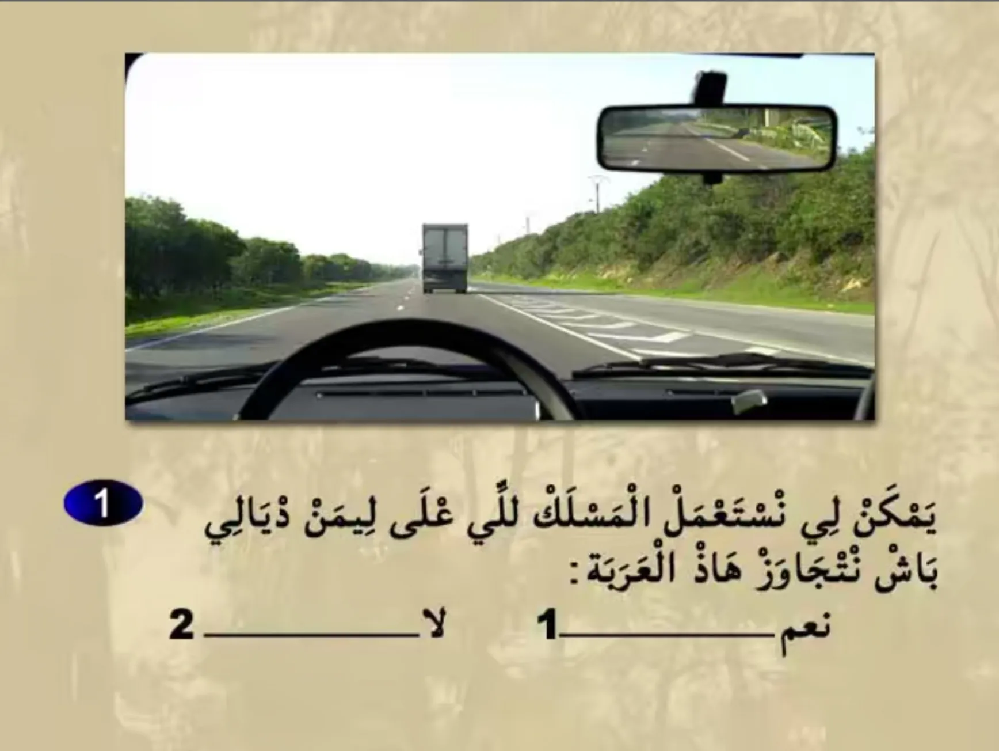
الكلافيي: 1–4 للجواب، Enter للتأكيد وللسؤال الجاي.
السلسلة 22 · النتيجة ديالك
0 / 40
السلسلة 22
السيارة (صنف B) · 40 سؤال، بالصوت، مع الجواب الصحيح والشرح.
السؤال 1
بيّن الجواب
الجواب الصحيح: 2
حتى وإن كان الممر على الجهة اليمنى فارغ فإن عملية التّجاوز نقوم بها فقط من الجهة اليسرى وليس اليمنى. (الحالة الوحيدة التي نقوم بها بالتّجاوز من الجهة اليمنى هي عندما تكون عربة تستعد للإنعطاف لليسار، في هذه الحالة يمكننا التّجاوز من الجهة اليمنى)
السؤال 2
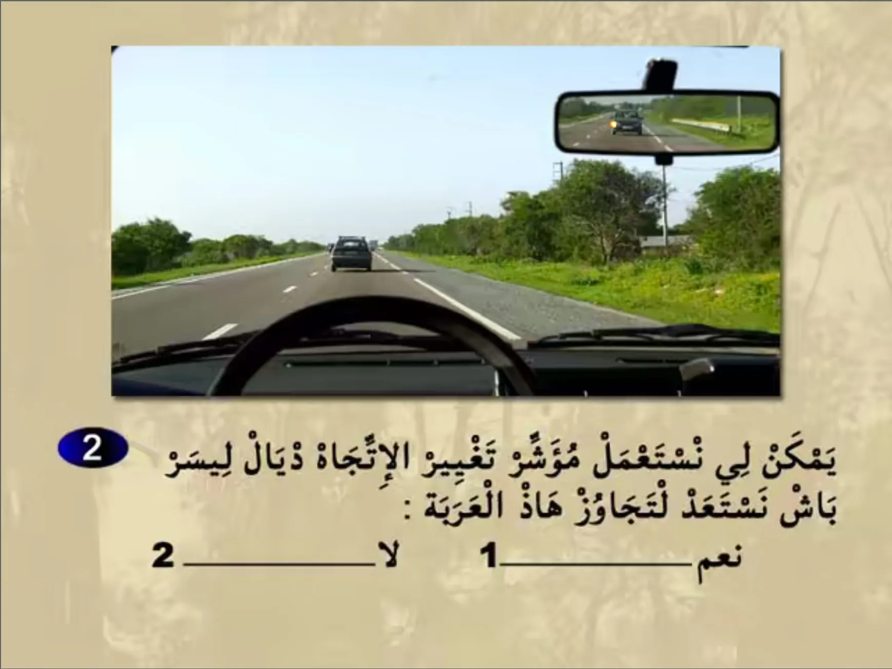
بيّن الجواب
الجواب الصحيح: 2
الخط المتقطع يسمح لنا بعملية التّجاوز، لكن توجد عربة من الخلف تستعمل مؤشر تغيير الإتّجاه وهذا يعني أنها تستعد لعملية التّجاوز، لذلك لا يمكننا إستعمال مؤشر تغيير الإتجاه لليسار لكي نقوم بعملية التجاوز لأنه توجد عربة من الخلف تستعد لعملية التجاوز.
السؤال 3
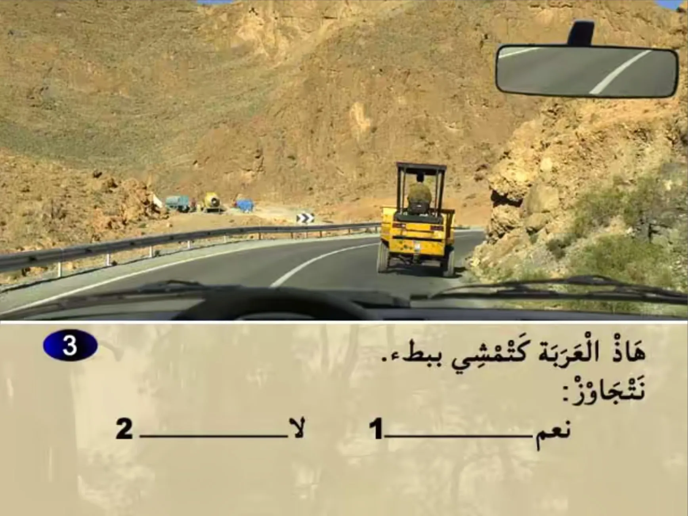
بيّن الجواب
الجواب الصحيح: 2
على الرّغم من أن العربة التي أمامنا تسير ببطئ فلا يمكننا تجاوزها لأن التّشوير الأفقي الخط المتصل يمنعنا من عملية التّجاوز.
السؤال 4
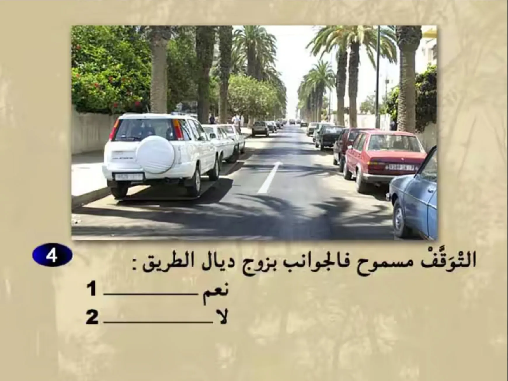
بيّن الجواب
الجواب الصحيح: 1
التوقّف مسموح به على الجانبين اليمين و اليسار. لأن الشارع الذي نتواجد فيه فهو ذو إتّجاه واحد (أي لا توجد عربات قادمة من الإتّجاه المعاكس) وهذا ما يوضّحه التّشوير الأفقي (السهم المرسوم على الأرض) فهو يعني على أن الطريق ذات إتّجاه واحد. إذن عندما تكون الطريق ذات إتجاه واحد فيمكننا التوقف على الجانبين معا (إذا لم تكن هنالك إشارات تمنع عملية التوقّف بطبيعة الحال)
السؤال 5
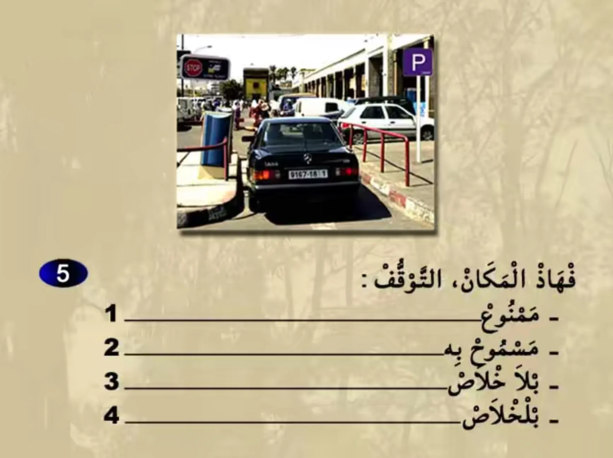
بيّن الجواب
الجواب الصحيح: 2 و 4
في هذا المكان التوقّف ليس ممنوع وهذا ما تشير إليه الإشارة الخاصة بموقف السيارات (P)، كما أن هذا الموقف الخاص بالسيارات فهو مدفوع وليس مجاني، وهذا ما توضّحه الإشارة الخاص بالدّفع، في الأعلى على يسار الصورة.
السؤال 6
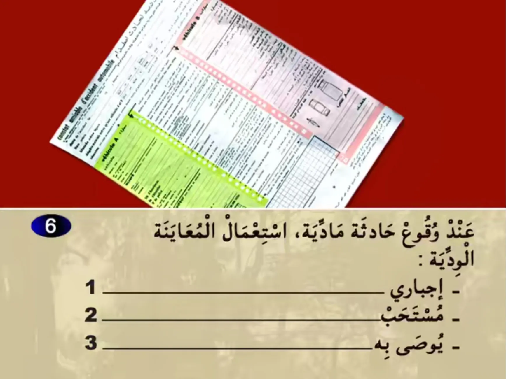
بيّن الجواب
الجواب الصحيح: 2 و 3
عند وقوع حادثة مادّية، فإن إستعمال المعاية الودّية غير إجباري عليّ أن أقوم بإستعمالها. لكن إستعمالها أثناء وقوع حادثة مادية فمستحب ويوصى بإستعمالها. لكن ليس إجباري.
السؤال 7
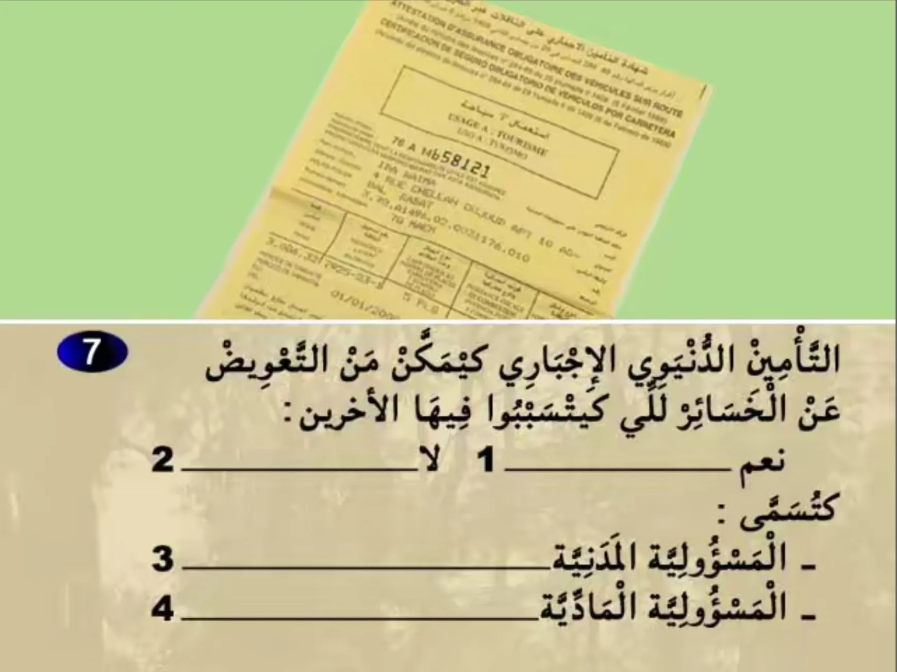
بيّن الجواب
الجواب الصحيح: 1 و 3
بالنسبة للتأمين الدُنيوي الإجباري فإنه يُمَكِّنُني من التّعويض على الخسائر التي يتسبب فيهاالاخرين (إذا كان الأخرون هم سبب الحادثة) وفي هذه الحالة تسمى المسؤولية المدنية (بالنسبة لكل الأخطار فهي تسمى المسؤولية المادّية).
السؤال 8
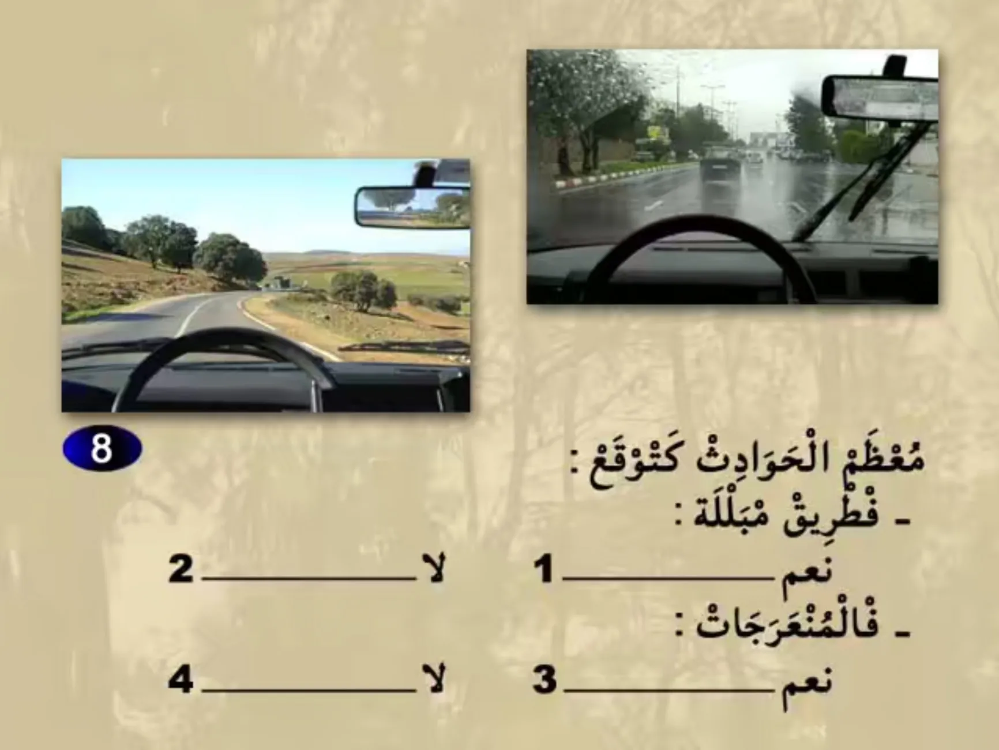
بيّن الجواب
الجواب الصحيح: 2 و 4
لا تحدث معظم الحوادث الطُّرقية في طريق مبلّلة أو في المنعرجات، فيمكن أن تحدث الحوادث الطّرقية في أي طريق مهما كانت وليس لأن الطريق مبلّلة أو لأننا نتواجد في منعرج (معظم الحوادث الطّرقية سببها سُلوكات السائق) .
السؤال 9
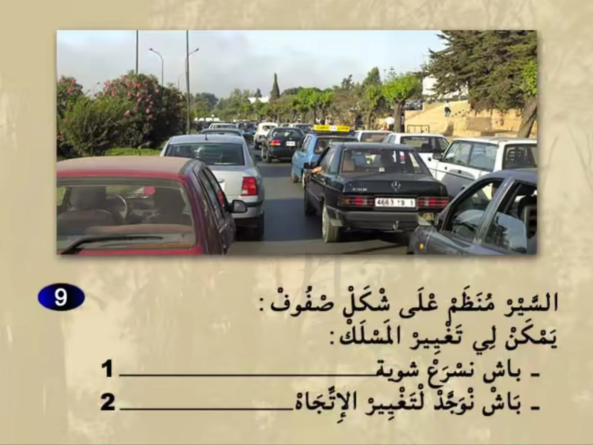
بيّن الجواب
الجواب الصحيح: 2
عندما تكون حركة السّير كثيفة وتتواجد الكثير من العربات في الطريق في نفس المسلك على شكل صفوف، فلا يُمكنني تغيير المسلك لكي أسرع قليلا، بل فقط يمكنني أن أقوم بتغيير المسلك لكي أقوم بتغيير الإتجاه (مثلا لو كنت أسير مباشرة وأردت تغيير المسلك لكي أنعطِف لليسار، فيمكنني ذلك، لكن لا يمكنني أن أقوم بتغيير المسلك لكي أسرع قليلا).
السؤال 10
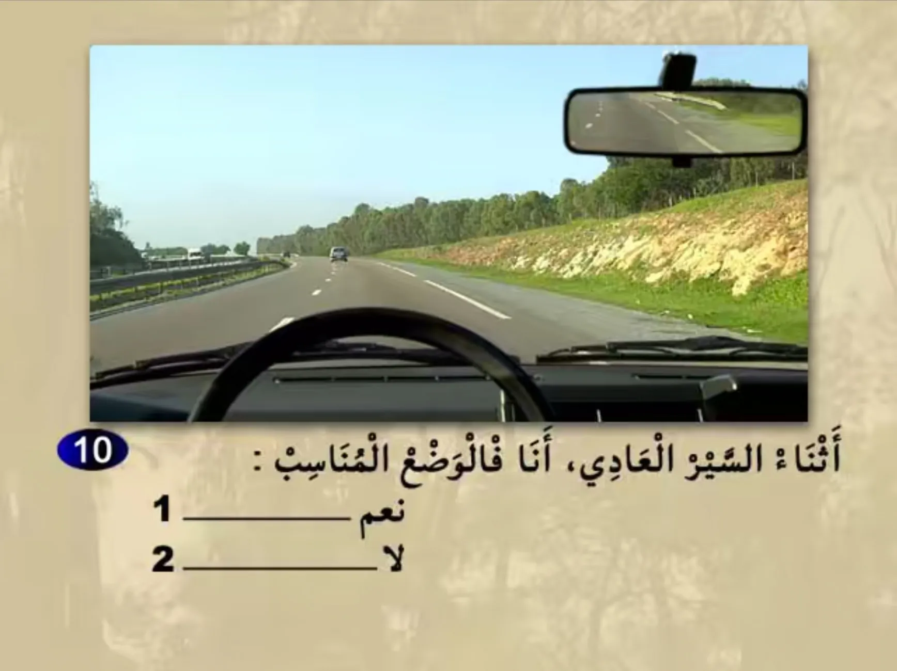
بيّن الجواب
الجواب الصحيح: 1
أثناء السّير العادي فإن الوضع المناسب للسّير فهو المسلك المتواجد على اليمين، في الصورة، يظهر على أنّنا نتواجد في المسلك المتواجد على اليمين، إذن نحن في الوضع المناسب للسّير العادي.
السؤال 11
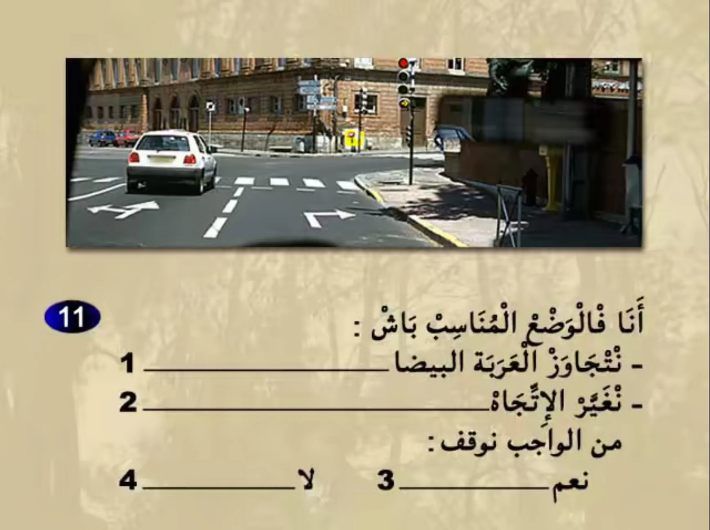
بيّن الجواب
الجواب الصحيح: 2 و 4
في هذه الحالة فنحن في وضع مناسب لكي نقوم بتغيير الإتّجاه نحو اليمين، لأنه يوجد تشوير أفقي (سهم مرسوم على الأرض) يُجبرني على الإنعطاف على اليمين، كما أنه ليس من الواجب عليّ أن أقوم بالوقوف لأن الإشارة الضوئية تسمح لي بالإنعطاف على اليمين (سهم أخضر). بالنسبة لتجاوز العربة البيضاء فلست في وضع مناسب لذلك، أولا لأن عملية التّجاوز تتم عبر اليسار وليس اليمين وأنا في مسلك لا يمكنني أن أتجاوز فيه، وثانيا الإشارة الضوئية حمراء، وأخيرا التّشوير الأفقي (الخط المتّصل على اليسار يمنعني من عملية التّجاوز) إذن أنا في وضع مناسب لتغيير الإتّجاه لليمين وأيظا ليس من الواجب عليّ أن أقوم بالوقوف)
السؤال 12
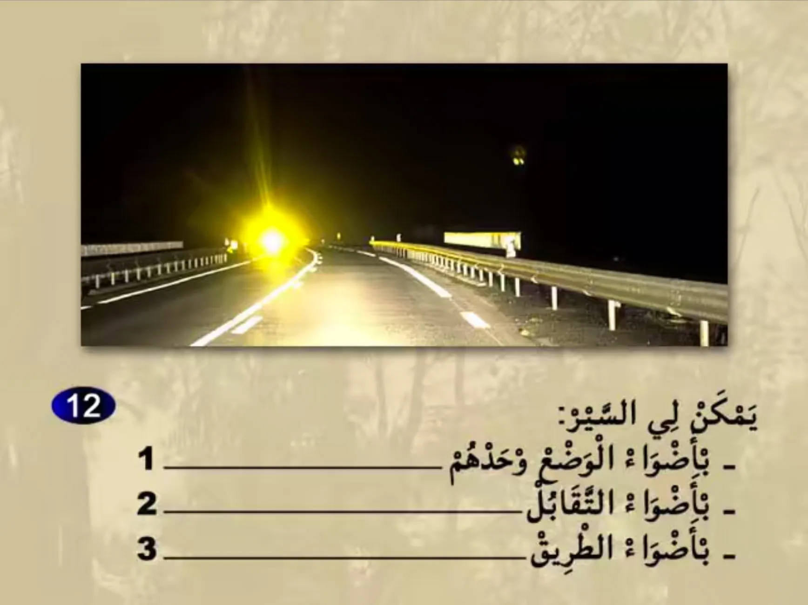
بيّن الجواب
الجواب الصحيح: 2
لا يمكن إختيار الإختيار الأول أضواء الوضع وحدهم لانه لا يمكننا السير بأضواء الوضع وحدهم، من الواجب في مثل هذه الحالات أثناء الفترة الليلية ان نقوم بإستعمال أضواء الوضع مع أضواء التقابل (ب 2) إذا كنا نريد إستعمال أضواء الوضع، ولا يمكن إستعمال أضواء الوضع وحدهم والسير بهم (لو كان الإختيار أضواء الوضع، بدون كلمة وحدهم فيمكننا إختيارهم) .
⚠️ ملاحظة: يمكن استعمال أضواء الوضع في آن واحد مع أضواء الطريق وأضواء التقابل والأضواء الخاصة بالضباب، ويمكن كذلك استعمالها وحدها عند وقوف المركبة أو توقفها أو عندما تكون ظروف الإنارة على الطرق، ماعدا الطريق السيار أو الطرق ذات المسالك الخاصة. الجواب الصحيح هو رقم 2.السؤال 13
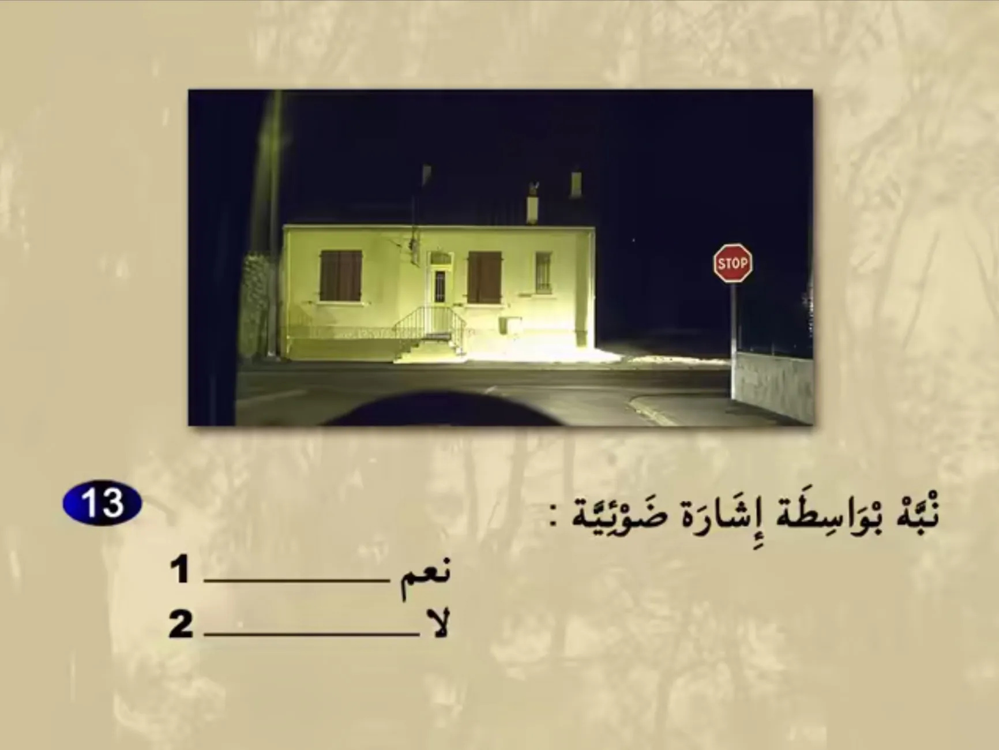
بيّن الجواب
الجواب الصحيح: 1
بما أننا في الفترة اللّيلية ونتواجد قرب ملتقى طرق، فيمكننا أن نقوم بالتّنبيه بواسطة إشارة ضوئية للسيارات القادمة من الجهة اليمنى واليسرى.
السؤال 14
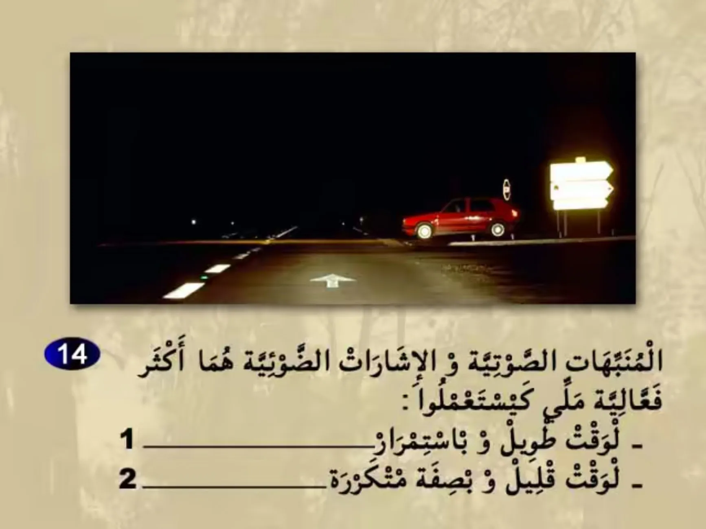
بيّن الجواب
الجواب الصحيح: 2
المنبّهات الصوتية والإشارات الضّوئية، ففعاليتهم تكون أكثر عندما نقوم بإستعمالهم لوقت قليل وبصفة مكررة، لكي تكون فاعليّتهم أكثر.
السؤال 15
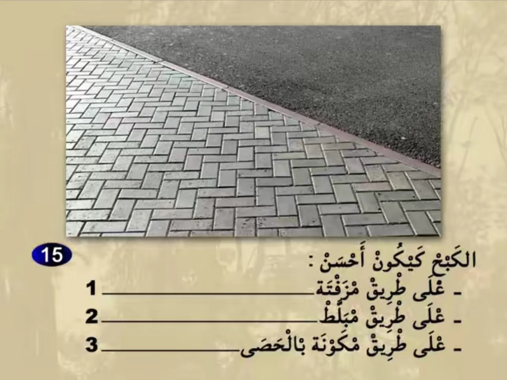
بيّن الجواب
الجواب الصحيح: 1
بالنسبة للكبح (عندما نستعمل الفرامل) فيكون أفضل على طريق مْزَفْتَة (كودرون - Goudron).
السؤال 16
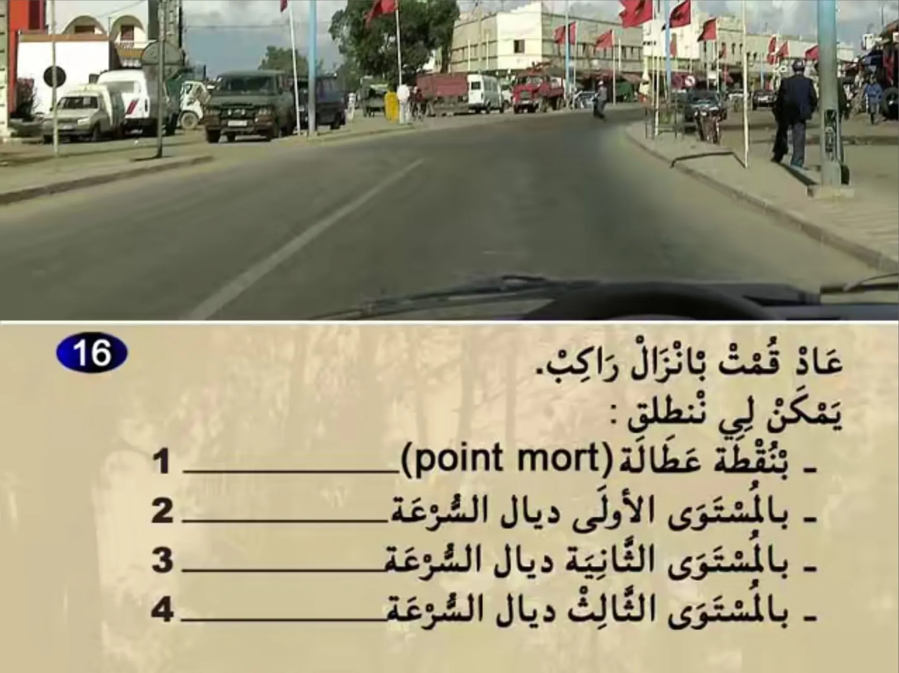
بيّن الجواب
الجواب الصحيح: 2
قمت بإنزال راكب الان (يعني أن العربة واقفة)، لذلك في هذه الحالة لكي أُكمل سَيري يمكنني السّير بالمستوى الأول من السرعة(Premier)، هو الذي سوف نقوم بإستعماله لكي ننطلق وليس مستوى اخر.
السؤال 17
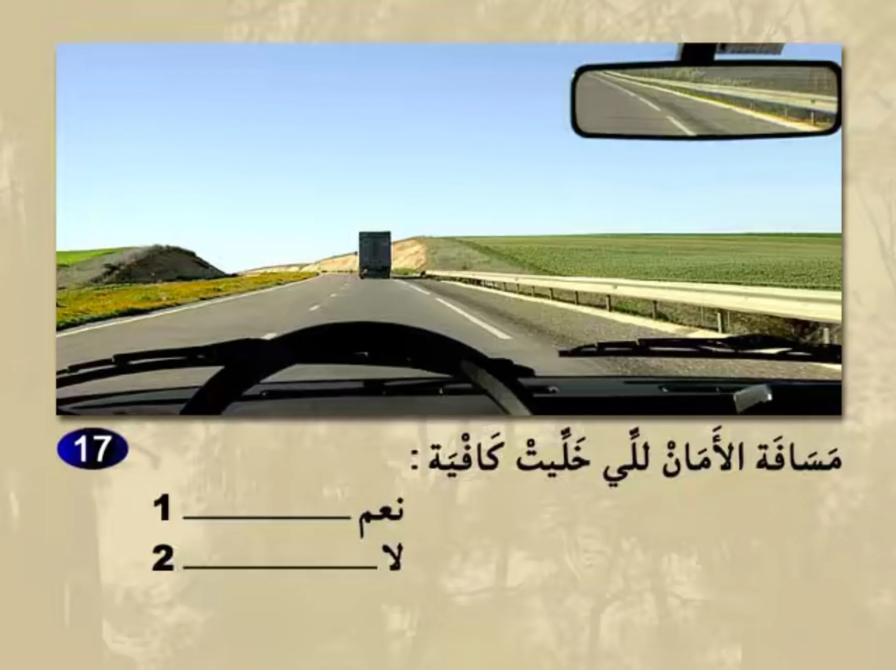
بيّن الجواب
الجواب الصحيح: 1
في الصورة تقريبا بيني وبين الشاحنة 3 خطوط طويلة (الجهة اليمنى من الطّريق) أي 60 متر (20 متر لكل واحد) إظافة إلى 3 فراغات بين الخطوط الطّويلة وهي تساوي تقريبا 15 متر ( 5 أمتار لكل واحد) أي أنه بيني وبين الشاحنة تقريبا 75 متر وهي مسافة أمان كافية.
السؤال 18
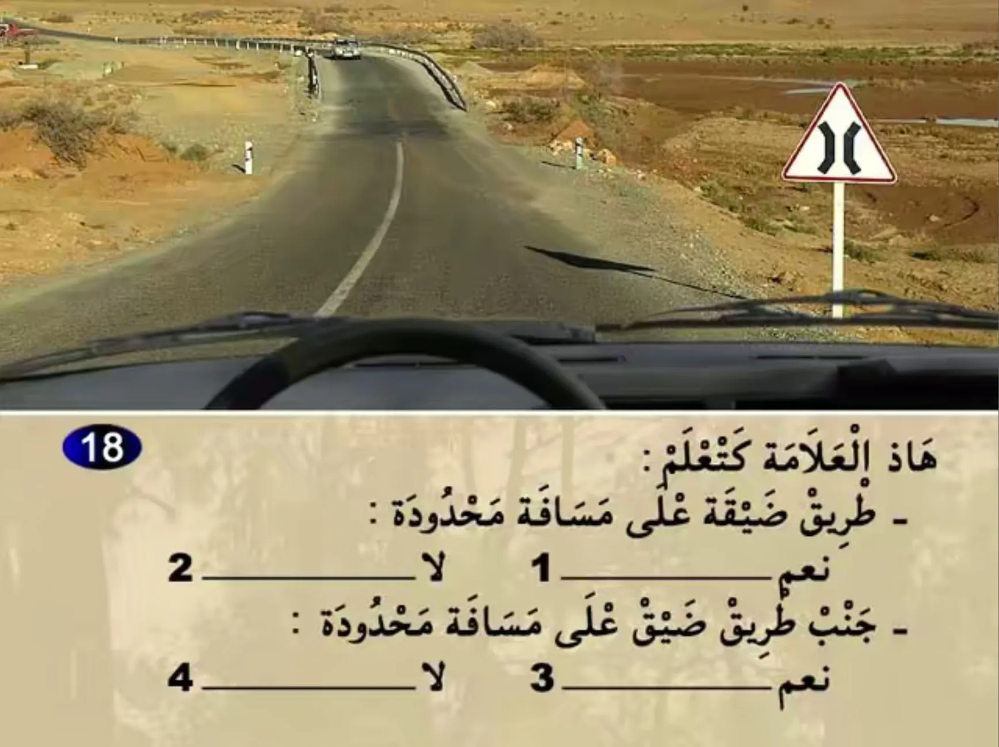
بيّن الجواب
الجواب الصحيح: 1 و 4
بالنسبة للإشارة الطّرقية فهي تعني على أن الطّريق ضيّقة على مسافة محدودة ولا تعني أن جوانب الطّريق ضيّقة على مسافة محدودة.
السؤال 19
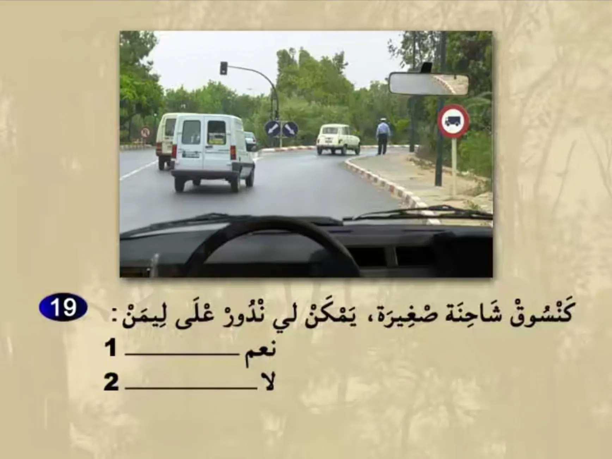
بيّن الجواب
الجواب الصحيح: 1
الإشارة الطّرقية فهي تمنع الشاحنات الكبيرة من المرور على اليمين، أنا أقود عربة صغيرة والمنع في هذه الحالة لا يعنيني، لذلك يمكنني أن أنعطف على اليمين.
السؤال 20
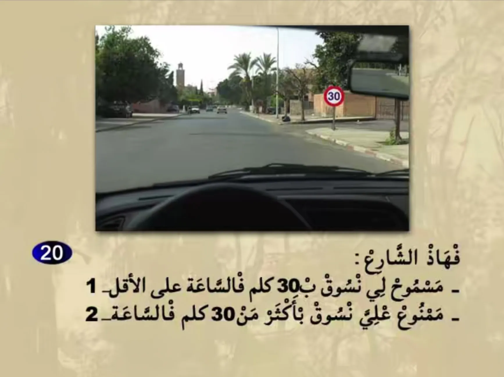
بيّن الجواب
الجواب الصحيح: 2
الإشارة الطّرقية فهي تعني المنع، وفي هذه الحالة فإن الإشارة الطّرقية تعني على أنه ممنوع عليّ أن أسوق العربة بسرعة فوق 30 كلم في الساعة.
السؤال 21
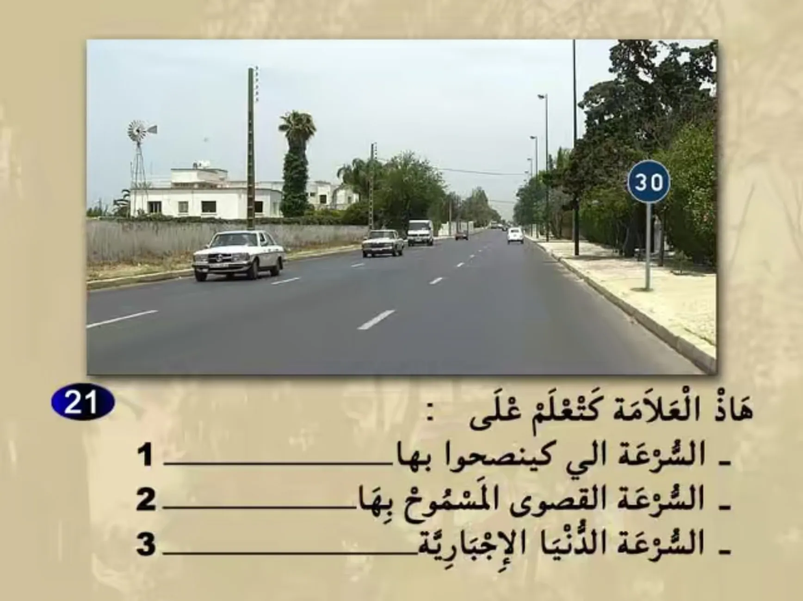
بيّن الجواب
الجواب الصحيح: 3
بالنسبة لهذه الإشارة الطّرقية فهي تشير إلى السرعة الدُّنيا الإجبارية، وهي تعني على أنه ممنوع عليّ أن أسوق العربة بسرعة أقل من 30 كلم في الساعة (داخل المدينة يمكنني السير بسرعة 30 كلم في الساعة إلى حدود 60 كلم في الساعة وخارج المدينة وفي طريق وطنية إلى حدود 100 كلم في الساعة).
السؤال 22
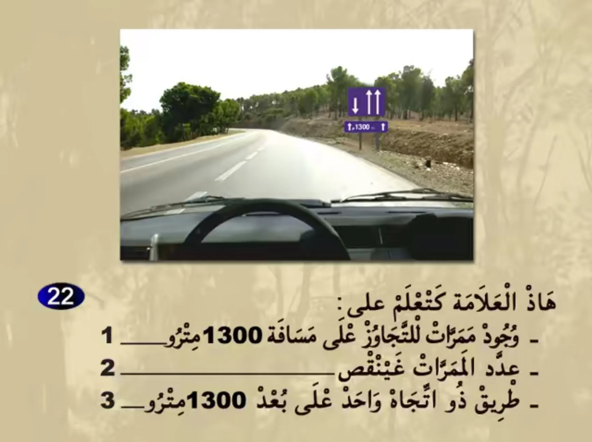
بيّن الجواب
الجواب الصحيح: 1
بالنسبة للإشارة الطّرقية فهي تعني أنه يوجد ممرّات للتجاوز على مسافة 1300 متر (سهم خاص بالسير العادي وسهم خاص بالتّجاوز كما يوجد في اللّافتة الطّرقية، والعلامة الطّرقية التكميلية والتي توجد في الأسفل فهي تعني على أن ممرّات التّجاوز سوف تكون على إمتداد أو على مسافة 1300 متر).
السؤال 23
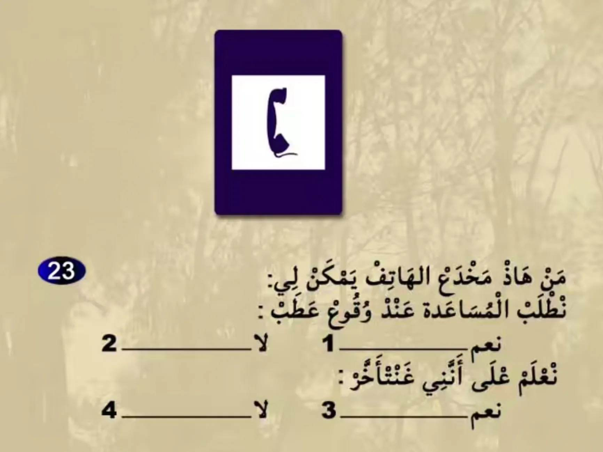
بيّن الجواب
الجواب الصحيح: 1 و 4
بالنسبة لهذه الإشارة الطّرقية فهي تعني مخدع الهاتف ويمكننا إستعماله فقط لطلب مساعدة بسبب وقوع عطب في العربة، ولا يُمكنني إستعماله لكي أُعلم على أنني سوف أتأخر.
السؤال 24
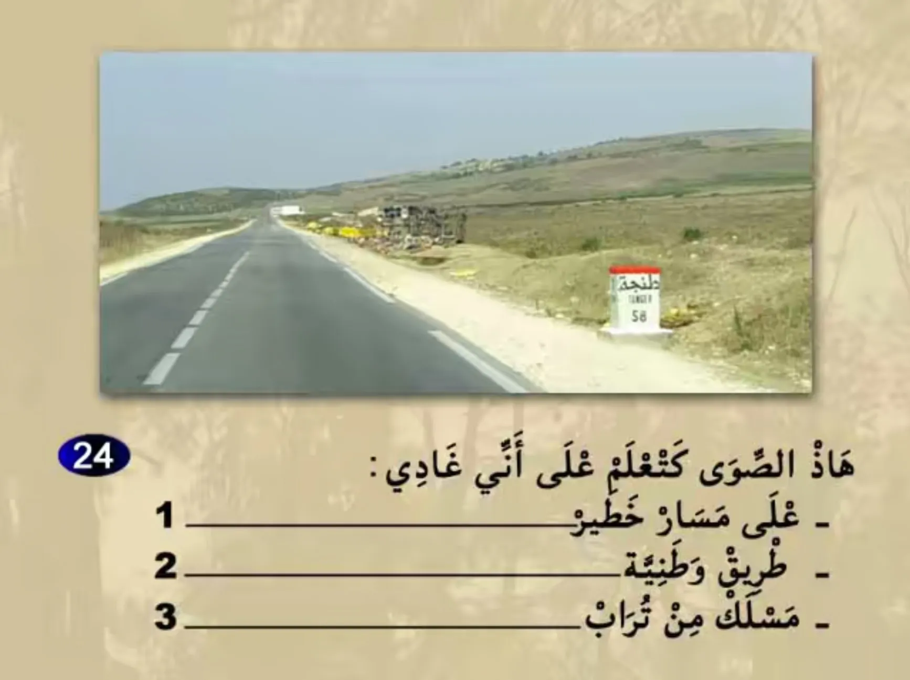
بيّن الجواب
الجواب الصحيح: 2
بالنسبة للصِّوى الظاهرة على الصورة والتي مكتوب عليها (طنجة) فهي تشير على أننا نسير في طريق وطنية (لون أحمر في الأعلى).
السؤال 25
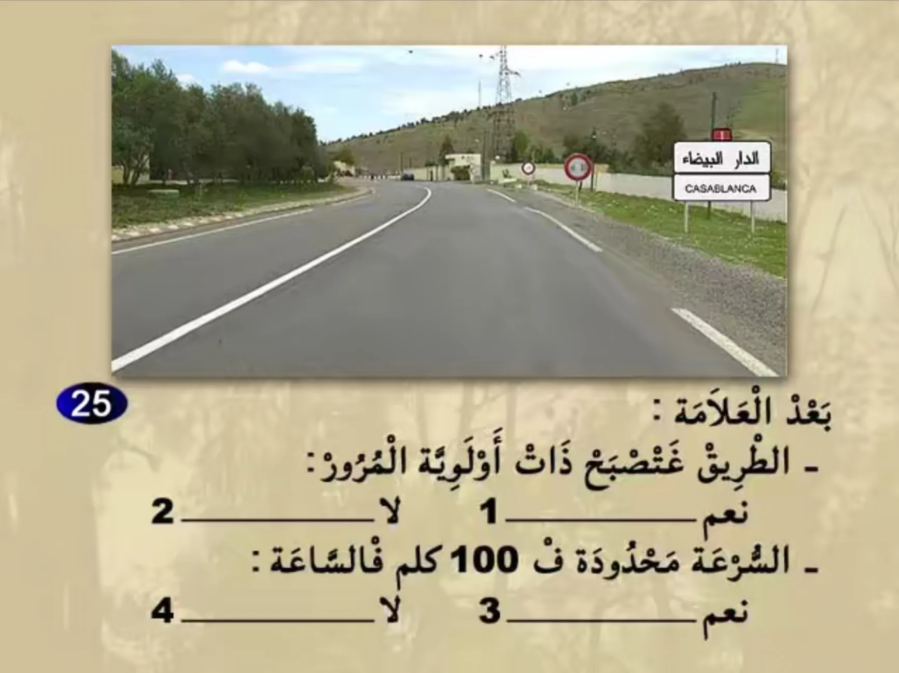
بيّن الجواب
الجواب الصحيح: 2 و 4
لا توجد إشارة طرقية تشير على أنه بعد العلامة فإن الطريق سوف تصبح ذات أولوية للمرور. بما أننا دخلنا إلى المدينة فالسرعة التي نسير بها في المدينة فهي محدودة في 60 كلم في الساعة وليس 100 كلم في الساعة .
السؤال 26
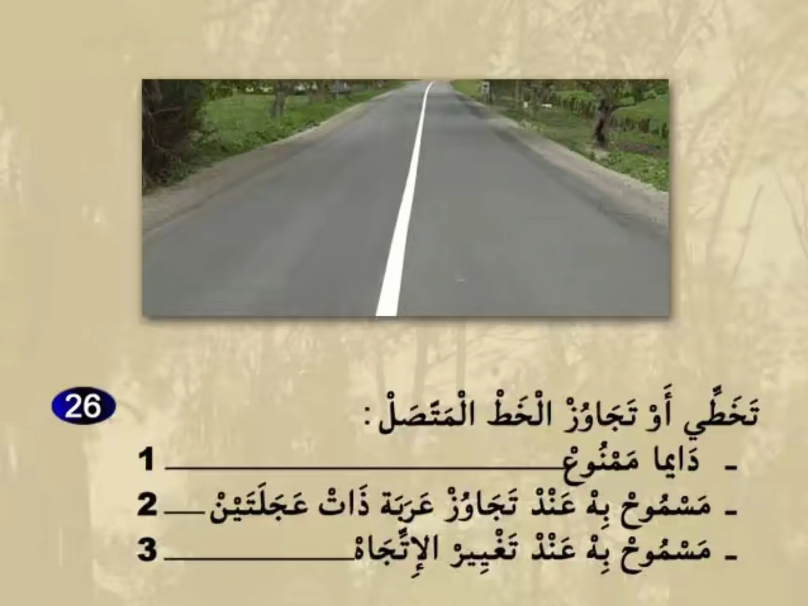
بيّن الجواب
الجواب الصحيح: 1
بالنسبة لتخطِّي أو تجاوز الخط المتّصل فهو ممنوع دائما.
السؤال 27
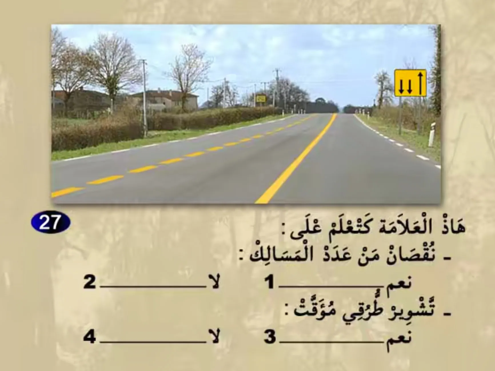
بيّن الجواب
الجواب الصحيح: 2 و 3
الإشارة الطّرقية فهي لا تعني نقصان من عدد المسالك الطرقية، وبما أنها باللون الأصفر فهي تعني على أن التشوير الطّرقي مؤقت.
السؤال 28
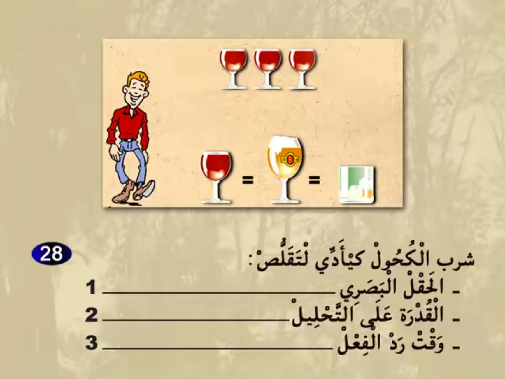
بيّن الجواب
الجواب الصحيح: 1 و 2
شرب الكحول فهو يؤدي إلى تقلّص الحقل البصري وكذلك القدرة على التّحليل (بالنسبة لوقت رد الفعل فهو يزداد عند شرب الكحول ولا يتقلّص).
السؤال 29
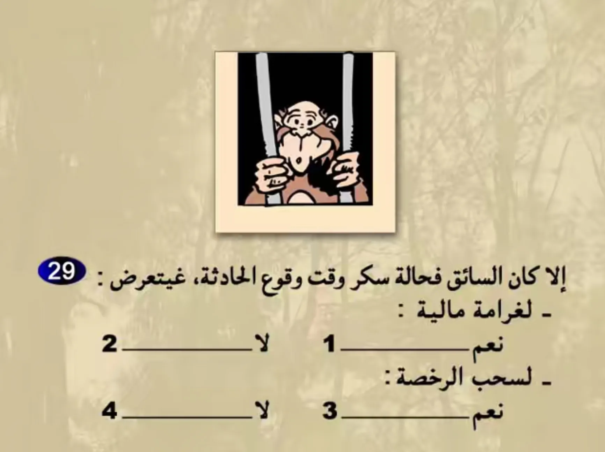
بيّن الجواب
الجواب الصحيح: 1 و 3
عند وقوع حادثة طرقية وكان السائق في حالة سكر فإنه سوف يتعرض لغرامة مالية وكذلك إلى سحب رخصة السياقة الخاصة به.
السؤال 30
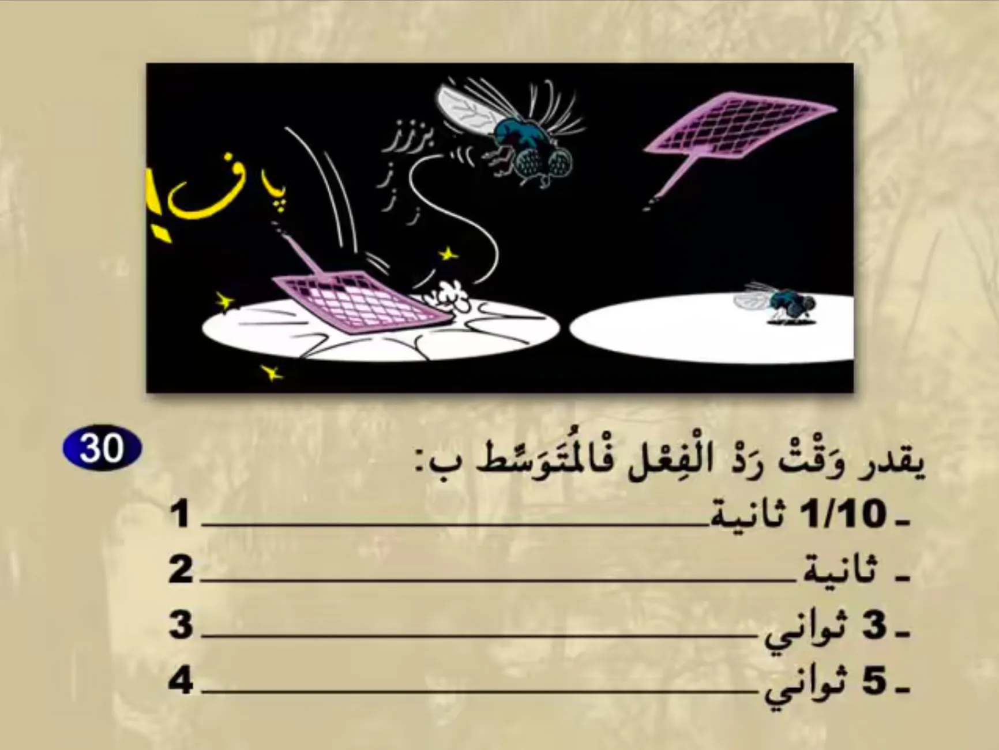
بيّن الجواب
الجواب الصحيح: 2
متوسّط وقت رد الفعل فهو يقدّر بثانية واحدة.
السؤال 31
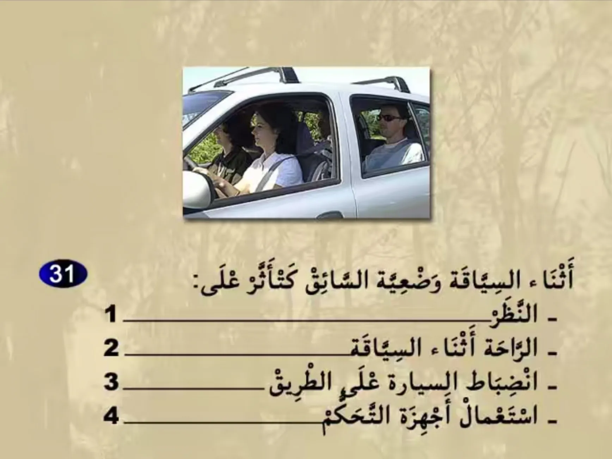
بيّن الجواب
الجواب الصحيح: 1 و 2 و 4
أثناء السّياقة فإن وضعية السائق تأثر على النظر، راحة الجلوس أثناء السياقة وأيظا تأثر على إستعمال أجهزة التحكم الموجودة داخل العربة.
السؤال 32
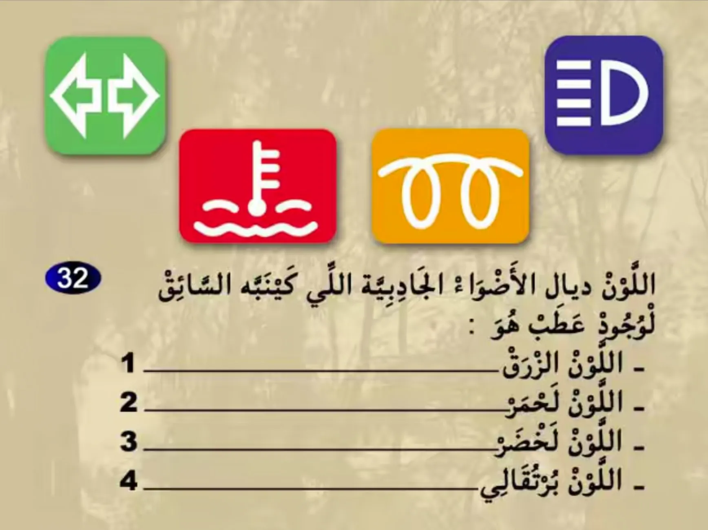
بيّن الجواب
الجواب الصحيح: 2
لون الأضواء الجادبية التي تنبّه سائق العربة على أنه يوجد عطب في العربة فهو اللّون الأحمر.
السؤال 33
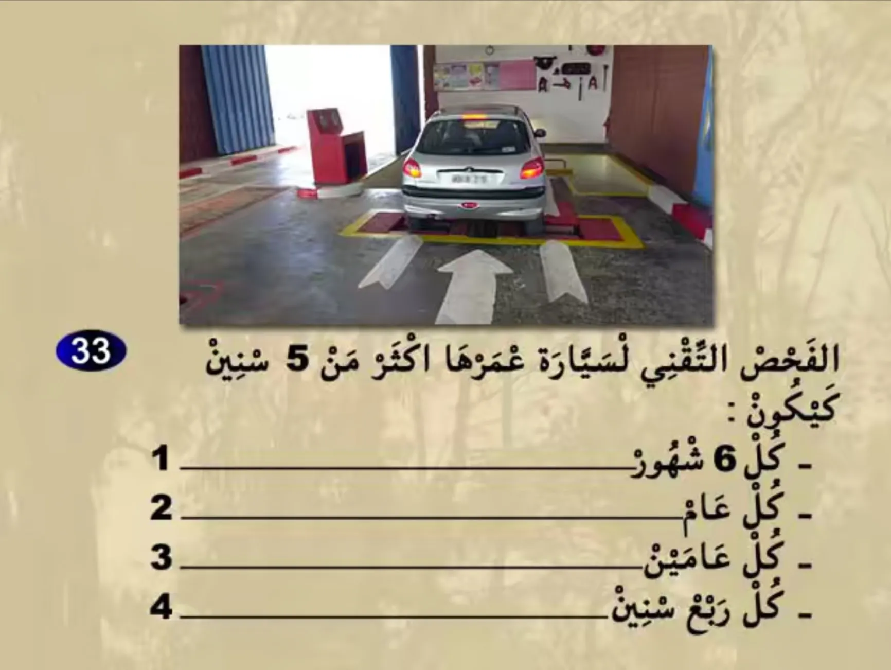
بيّن الجواب
الجواب الصحيح: 2
عند تجاوز عُمْرْ السيّارة 5 سنوات فإنها تكون ملزمة بالفحص التقني كل عام.
السؤال 34
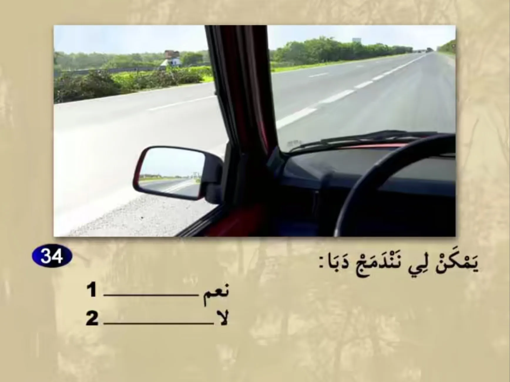
بيّن الجواب
الجواب الصحيح: 1
المراَة الجانبية للعربة فهي توضح على أنه لا توجد عربات قادمة من الخلف، لذلك يمكننا الإندماج في حركة السّير.
السؤال 35
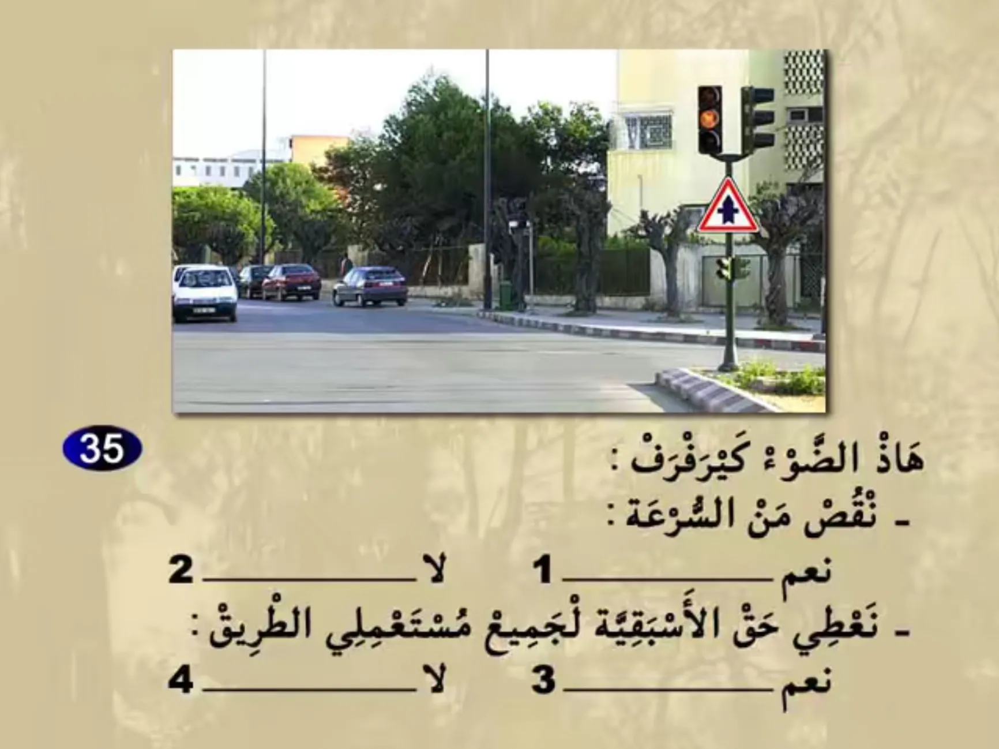
بيّن الجواب
الجواب الصحيح: 1 و 4
بما أن الإشارة الضوئية تُرفرف فهذا يعني على أنها غير شغالة لذلك يجب علي أن أنقص من السرعة. وبالنسبة للإشارة الطّرقية التي توجد أسفل الإشارة الضوئية فهي تعني على أنه لديّ حق الأسبقية في هذا الملتقى، لذلك لن أعطي حق الأسبقية لجميع مستعملي الطّريق.
السؤال 36
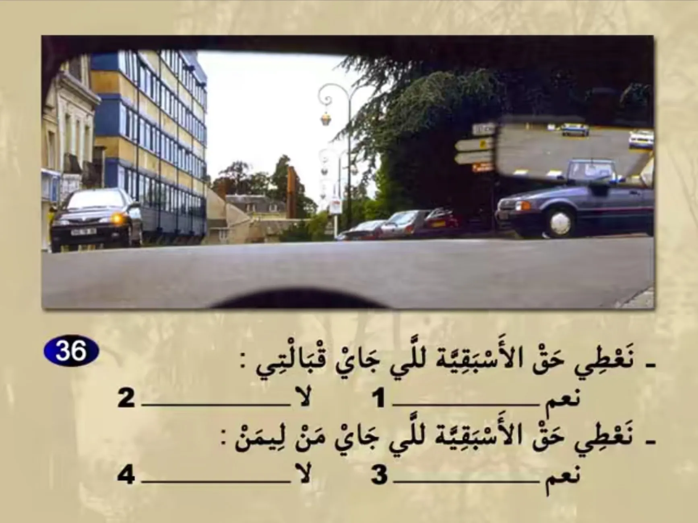
بيّن الجواب
الجواب الصحيح: 2 و 3
بالنسبة للعربة التي توجد على الجهة اليسرى فلا أعطي لها حق الأسبقية لأنها سوف تُغير إتّجاهها وسوف أصبح أنا على يمينها يعني أنا من لديه حق الأسبقية. بالنسبة للعربة القادمة من الجهة اليمنى فيجب عليّ أن أعطي لها حق الأسبقية لأن الأسبقية للعربات القادمة من الجهة اليمنى بما أنه لا توجد لديها علامة قف.
السؤال 37
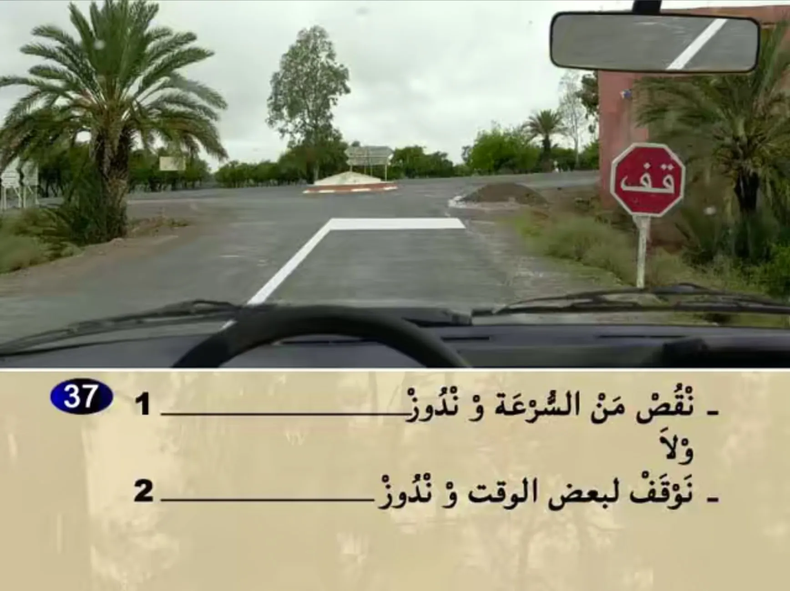
بيّن الجواب
الجواب الصحيح: 2
لدينا علامة قف، إذن يجب علينا الوقوف لبعض الوقت عند الخط الموجود في الأمام للتأكد من أن الطريق فارغة وبعد ذلك يمكننا المرور.
السؤال 38
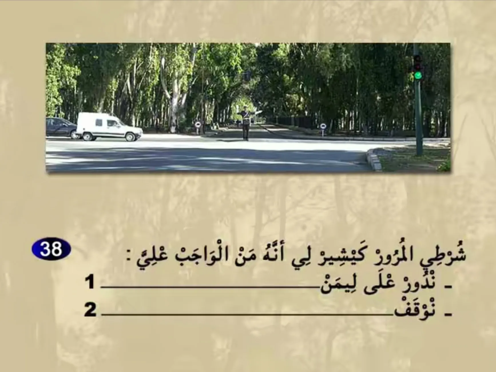
بيّن الجواب
الجواب الصحيح: 2
عندما يكون شرطي المرور ينظر إلينا مباشرة فإن هذه الإشارة تعني على أنه من الواجب علي الوقوف.
السؤال 39
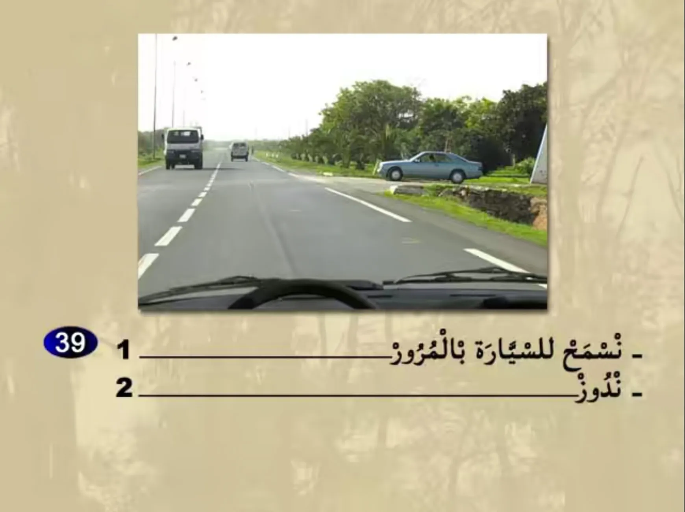
بيّن الجواب
الجواب الصحيح: 2
نسير في طريق رئيسية والعربة التي على اليمين فهي في طريق غير معبّدة (la piste) في هذه الحالة فيجب على العربة المتواجدة على اليمين أن تنتظر إلى حين أن تصبح الطريق فارغة من الجهة اليمنى واليسرى لكي تستطيع المرور. إذن في هذه الحالة أقوم أنا بالمرور أولا
السؤال 40
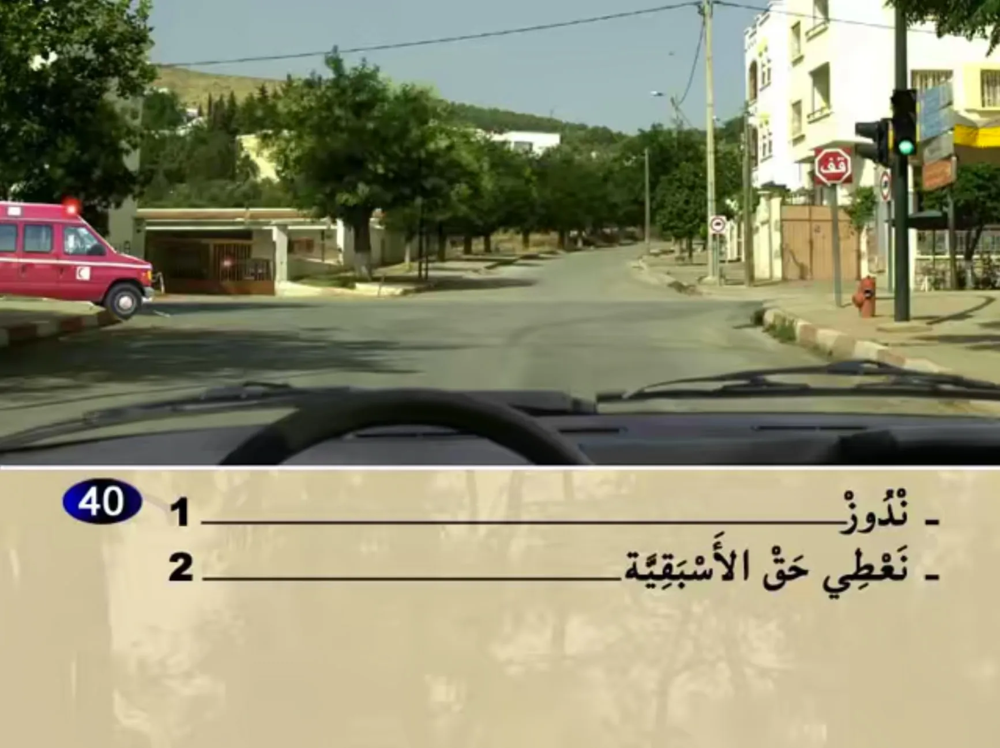
بيّن الجواب
الجواب الصحيح: 2
على الرّغم من أن الإشارة الضوئية الخضراء تسمح لي بالمرور فيجب عليّ أن أعطي حق الأسبقية لسيارة الإسعاف بما أنها في مهمّة إستعجالية وهذا ما توضّحه الأضواء الحمراء المشتغلة في أعلى سيارة الإسعاف.